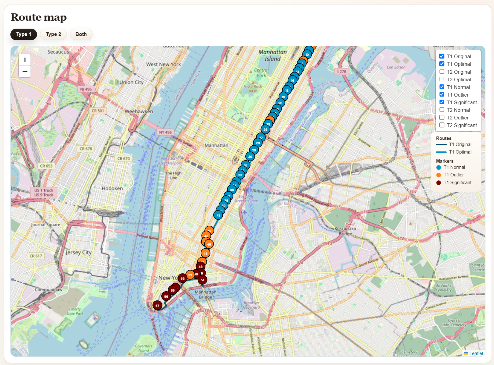

Route Contribution Intelligence
A compact guide to the route-level economic outlier problem, the mathematical model, the implemented solution and the public demo example used throughout the documentation.

The central question is simple: which parts of a route look costly, and which of those are actually economically weak once revenue is included?
A stop can look inefficient on a map and still be worth serving. Another can look harmless geographically and still weaken the route economically.
This documentation therefore treats outlier detection as an economic route problem rather than a purely spatial or statistical one. The pages move from the business question, to the formal model, to the coded method, and finally to the outputs used in practice.
- Introduction: frames the business problem and explains why distance alone is not enough.
- Theory: turns the route into a graph model with route length, revenue and economic notation.
- Solution: explains how the removal logic is coded and implemented in Python, and how it becomes a practical search method.
- Implementation: connects the mathematical layer to the actual software structure.
- Example: shows the full workflow on the New York bus-route demo scenario.
Taken together, the documentation moves from problem statement to model, from model to implementation, and from implementation to working outputs that can be read at scenario, route and stop level.
Demo
Go directly to the interactive application or the static overview to see the demo scenario in action.
|
Interactive application
Open the multi-scenario demo with route filters and overview pages.
|
Open app |
|
Single-scenario application
Open the focused demo view for the fixed New York bus-route scenario.
|
Open app |
|
Static presentation
Open the rendered static overview with prebuilt HTML output.
|
Open static |
|
Article
Read the short article introduction and view the compiled PDF.
|
Open article |